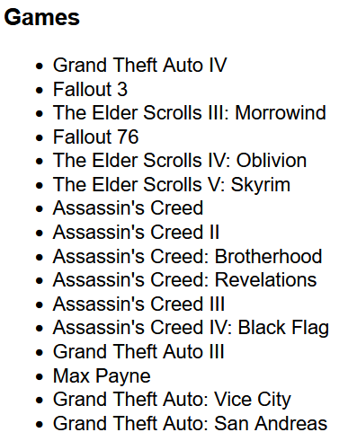
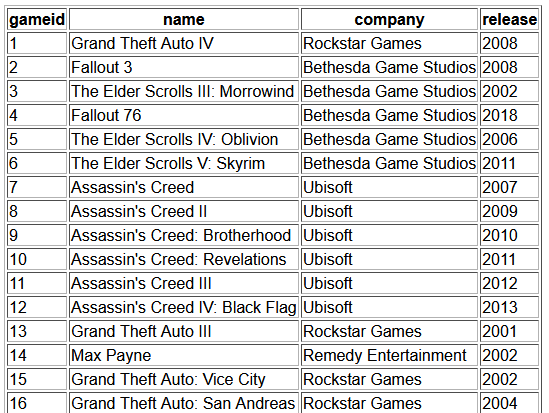
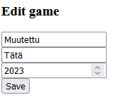

Demo 10
PDO: tietokantayhteys
Tietokanta
Lisää samariumille phpmyadminiin taulu ja tiedot lukemalla sql-tiedosto test_games.sql.
yhteys.php
Laadi yhteys.php joka luo pdo-olion avulla tietokantayhteyden.
$dsn = 'mysql:dbname=test;host=localhost';
$user = 'root';
$password = '';
try {
$pdo = new PDO($dsn, $user, $password);
} catch (PDOException $e) {
echo 'Connection failed: ' . $e->getMessage();
}
demo10.php
Laadi demo10.php. Lue mukaan yhteys.php.
<?php // demo10.php // lue mukaan yhteys.php require "yhteys.php"; // haetaan sql-kyselyllä kaikki pelit $sql = "SELECT * FROM test_games"; // suoritetaan kysely pdo-yhteydelle $stmt = $pdo->query($sql); $rows = $stmt->fetchAll(); // tuliko jotain? print_r($rows); ?>
Kun toimii niin kokeile tulostaa li-elementeissä pelien nimet, tähän sopii foreach-toistorakenne:

Listan lisäksi voidaan tulostaa tiedot esimerkiksi taulukossa:

Kokeile lisätä vielä otsikot taulukolle (th).
INSERT
Lomake tiedon lisäämistä varten
Insert game
Kun lomake lähetetään demo10.php -sivulla oleva käsittelijä tarkistaa löytyykö lomakkeen tiedot ja tarvittaessa suorittaa INSERT INTO -kyselyn.
Lomakkeen käsittelijä:
if (isset($_POST["name"], $_POST["company"], $_POST["release"])) {
$name = $_POST["name"];
$company = $_POST["company"];
$release = $_POST["release"];
// muuttujien paikalle ? -merkit
$sql = "INSERT INTO `test_games` (`name`, `company`, `release`) VALUES (?, ?, ?)";
// kerätään muuttujat taulukkoon:
$data = array ($name, $company, $release);
// suoritetaan sql-lause
$stmt = $pdo->prepare($sql);
$stmt->execute($data);
}
DELETE
Lisää table-taulukollesi uusi sarake "actions", lisää taulukon luonnissa td-kenttään tekstit edit ja delete.
echo "<td><a href='./demot/delete.php?id=" . $row["gameid"] . "'>delete</a> edit</td>";
Tee uusi tiedosto jossa hoidetaan poistaminen:
<?php
// delete.php
require "yhteys.php";
if (isset($_GET["id"])) {
$sql = "DELETE FROM test_games WHERE gameid=?";
$data = array($_GET["id"]);
$stmt = $pdo->prepare($sql);
$stmt->execute($data);
header('Location: demo10.php');
exit;
}
?>
Jos tämä ei toimi index.php-sivusi kautta niin korvaa polut näin:
- echo "<td><a href='./demot/delete.php?id=" . $row["gameid"] . "'>delete</a> edit</td>";
- header('Location: ../index.php?sivu=demo10&kansio=demot');
UPDATE
Tiedon päivittäminen kannattaa tehdä omalle php-sivulle, taulukossa oleva linkki johtaa edit.php-sivulle ja välittää myös tiedon mitä tietuetta ollaan muokkaamassa (id). Tee uudi edit.php ja tallenna se demot-kansioosi.

<?php
require "yhteys.php";
if (isset($_GET["id"])){
// tuli get
$sql = "SELECT * FROM test_games WHERE gameid=?";
$data = array($_GET["id"]);
$stmt = $pdo->prepare($sql);
$stmt->execute($data);
$rows = $stmt->fetchAll();
//var_dump($rows);
if (!$rows) {
echo "No games!";
}
else {
$name = $rows[0]["name"];
$company = $rows[0]["company"];
$release = $rows[0]["release"];
$gameid = $_GET["id"];
}
}
?>
Kun tiedot on haettu niin näytetään ne html-lomakkeella, huom hidden-kenttä ja value-arvot!
<h3>Edit game</h3>
<form method="post">
<input type="text" value="<?php echo $name; ?>" name="name" /><br />
<input type="text" value="<?php echo $company; ?>" name="company" /><br />
<input type="number" value="<?php echo $release; ?>" name="release" /><br />
<input type="hidden" name="gameid" value="<?php echo $gameid; ?>" />
<input type="submit" value="Save" /><br />
</form>
Kun lomake lähetetään tarvitaan toinen käsittelijä, tee tämä lomakkeen yläpuolelle php-tagien sisälle:
if (isset($_POST["name"], $_POST["company"],
$_POST["release"], $_POST["gameid"])) {
// tuli post
$name = $_POST["name"];
$company = $_POST["company"];
$release = $_POST["release"];
$gameid = $_POST["gameid"];
$data = array($name, $company, $release, $gameid);
$sql = "UPDATE `test_games` SET `name`=?,
`company`=?, `release`=? WHERE gameid=?";
$stmt = $pdo->prepare($sql);
$stmt->execute($data);
header('Location: ../index.php?kansio=demot&sivu=demo10');
exit;
}
Taulukon järjestäminen otsikoita klikkaamalla
Järjestäminen voidaan tehdä SQL:n avulla (ORDER BY) tai selaimessa. Jos tietoja ei ole paljon niin helpointa on käyttää JavaScriptiä järjestämiseen.
- Katso w3schools: how to JS sort table -esimerkki
- Lisää skripti itsellesi demolle ja kokeile toimintaa